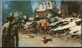
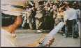
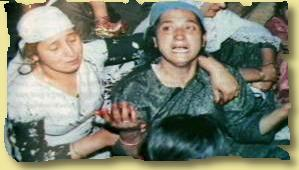

|
Hacked By Doctor Nuker |

|
doctornuker@puckoff.com |
|
Everything was a propaganda. Now entering the REAL zone.. Welcome to reality!   A Catalogue of Indian Atrocities in Kashmir This is a documentary testimony of horror in Indian Occupied Kashmir;
of
 The extent of torture, killings and rapes perpetrated on Kashmiri people
by
Killings Since 1989, an estimated 50,000 Kashmiris have been killed by the Indian
forces
Torture & Custodial Deaths Victims in custody are treated as bodies of flesh and bones. The punishment
starts at
Rape and Molestation of Women An estimated one million women have either been bereaved, tortured or
humiliated and
For real news check these sites out http://dawn.com/
Mirrors of Indian web sites hacked by PHC Department of Electronics, Government of India Engineering Export Promotional Council, Ministry of Commerce Ahmadamad Telephone Online Directory, Ahmadabad Telecom District |
|
Mr_Sweet , AntiChrist , Devil-C , p4riah , PS911 , ALOC , Forpaxe , McIntyre , pr1sm , exode , weLLfaRe , 139_r00ted , ne0h , subartic , HiP , Legion 2000 , Xessor , mistuh clean , lyp0x , Da^Bomb , mozy , k0ld , Deicidal , HIT2000 , spinkus , bl0w team , an0nym0us , RaFaAlFa , sOoRi , aekpani , Sepu|tura , DEATH^aCeS , ßÎä©K×JãçK , NuRaIn , ADM , InSt|nCt , heataz , Sn1p3r , RSnake^ , LYCOS , m0s , GForce , un1x b0wl1ng t34m , ULG , cult_hero , LevelSeven , v00d00 , Hi-Tech Hate , gH , syxx , s0ften , analognet , punkis , [Narcissus] , The DDT , attrition.org , hackernews.com , packetstorm.securify.com , projectgamma.com , net-security.org , zataz.com |